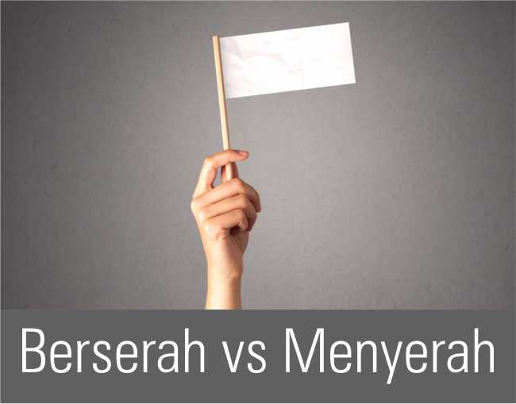

Rabu, 02 Juni 2021 | Kejadian 26
Serahkanlah hidupmu kepada TUHAN dan percayalah kepada-Nya, dan Ia akan bertindak;
Mazmur 37:5
Apa beda berserah dan menyerah? Untuk mudahnya, kita bisa memakai gambaran menaiki pesawat (atau transportasi umum lain). Ketika kita naik pesawat komersial, kita tentu tidak akan menanyakan jam terbang pilot, usia pesawat yang kita naiki, juga tidak menanyakan apakah pilot dan kru pesawat lain dalam keadaan bugar. Kita percaya saja pada kemampuan dan integritas perusahaan maskapai itu sebab kita sudah tahu kualitas mereka. Kira-kira seperti itulah gambaran dari berserah.
Menyerah beda lagi. Menyerah itu entah kita naik pesawat apa dan terbang ke mana pun, kita tak peduli. Mau terbang dengan pesawat kecil tua saat badai mengamuk dengan mesin yang sulit nyala dan pilot tampak mabuk pun kita tak peduli. Ya, dalam sikap berserah, ada rasa percaya. Ada juga informasi, pengetahuan atau melibatkan hikmat sebelum memutuskan. Beda dengan menyerah .
Sekilas Ishak tampak mudah menyerah. Ia berulang kali diusir dan begitu saja pergi tanpa melawan. Tapi, Ishak bukan menyerah tapi berserah. Buktinya, ia terus berusaha. Ia tahu dan percaya Tuhan besertanya dan akan memberkatinya. Benar saja, pada akhirnya Ishak berhasil. Ada banyak orang Kristen menyamakan berserah sebagai menyerah karena mereka sudah tidak tahu apa yang harus dilakukan. Keadaan sudah genting, kondisinya terjepit, semua jalan sepertinya sudah buntu. Di saat seperti itu, baru mereka berseru pada Tuhan. Tapi, apa yang terjadi setelah Tuhan menolong mereka? Banyak yang tak lagi mengandalkan Dia karena merasa masih bisa berusaha sendiri. Ini namanya sekadar menyerah dan tak peduli. Sebaliknya, berserah adalah sikap yang aktif percaya pada Tuhan. Kita percaya pada-Nya karena kita iman dan iman itu tumbuh dari mendengar dan mempelajari firman-Nya (Rm. 10:17). Menyerah hanya terjadi di satu momen saja, tapi berserah pada Tuhan adalah sikap hidup orang percaya. Tuhan tidak mau kita menjadi orang yang menyerah berputus asa, tapi Ia mau kita menjadi orang yang berserah percaya pada-Nya. Seperti Ishak, teruslah berusaha dan tidak menyerah, tapi serahkan semua hasilnya di tangan Tuhan. Percayalah, Ia tidak akan tinggal diam saat orang benar yang hidup sesuai kehendak-Nya mau bekerja dan berusaha. • ARC
Jangan menyerah, tapi hiduplah berserah pada-Nya!